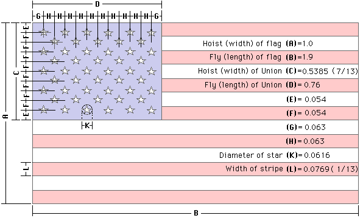
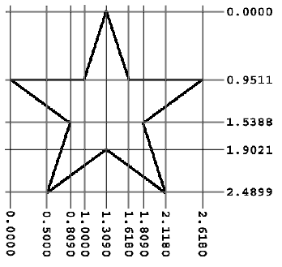

Read time: 2.9 minutes (294 words)
SVG Club Logo¶
When I first joined the club, their logo was found only in an image file. The original artist created the logo manually, then scanned it for club use. The original is no longer available.
I decided that we needed a more permanent logo, one that could be scaled for a variety of purposes. I also decided that we needed a badge we could use on model airplanes, or club membership cards.
The solution was to take the image file and see if I could turn it into a pure SVG file. This note details the process I went through to come up with the new logo.
Logo Composition¶
The image file had only a few basic elements:
The US Flag masked by a heart shape
The heart shape path
A Modeler launching an airplane
The Airplane itself
The name “HAFFA” styled in what looked like the Papyrus font
Flag Geometry¶
The dimensions of the flag are well defined. Here is the basic geometry from http://https://www.chamberofcommerce.org/usflag/flagspecs.html:
The stars are positioned at the center of a circle of the defined radius. Each point is located at an angle of 360/5 = 72 degrees, making the height of the star a bit shorter than the width. Here is another image showing the positions of the points that make up each star:
With these two figures, we can build a basic flag file using fairly simple SVG commands.
Logo Canvas¶
Our basic canvas will be a standard US Letter paper. We will build the logo and the badge so they can be printed out on any inkjet printer.
SVG traditionally uses pixels as a basic unit of measure. However, pixels vary in size as you switch to different devices. We will use the inch as a basic measurement. Remember, SVG is a vector format, meaning we can scale the final image to suit our needs.